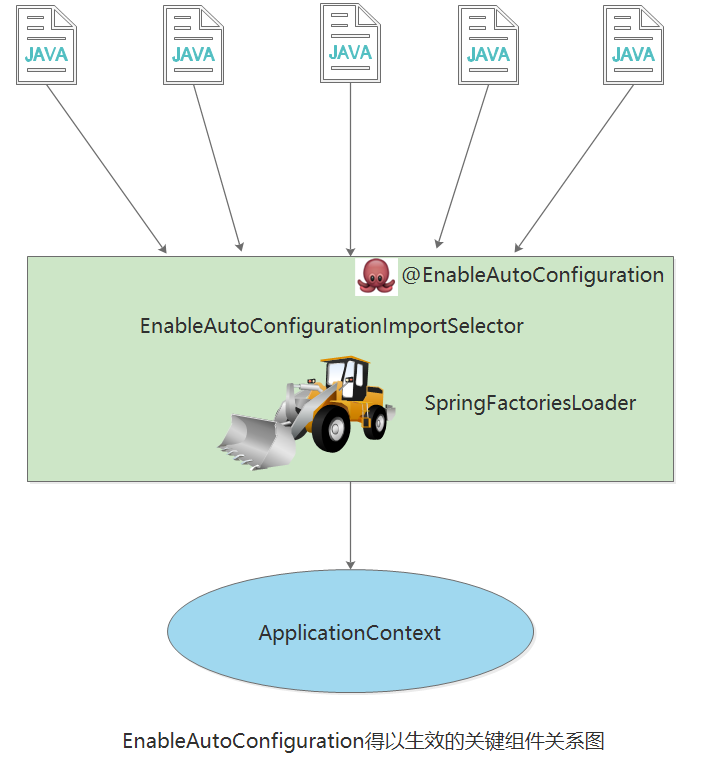

3.3 启动类与核心注解
在我们实际的工作中，一般都会使用前后端分离机构来构建业务应用系统。一个典型的Spring Boot后台应用以restful方式提供服务。
在Spring Boot后台应用中，我们通常会看到一个含有main方法的启动类被SpringApplication.run方法运行。了解这个启动类，有助于我们对Spring Boot应用加深理解。
3.3.1 启动类
标注@SpringBootApplication注解的类，就是Spring Boot应用程序的启动类。这个启动类中包含main方法。
Spring Boot通过SpringApplication这个类的run方法来加载这个类，运行Spring Boot应用。
package com.example.hello;
import org.springframework.boot.SpringApplication;
import org.springframework.boot.autoconfigure.SpringBootApplication;
@SpringBootApplication
public class HelloSpringBootApplication {
public static void main(String[] args) {
SpringApplication.run(HelloSpringBootApplication.class, args);
}
}
run方法做了两件事：
- 创建SpringApplication对象；在对象初始化时保存事件监听器，容器初始化类以及判断是否为web应用，保存包含main方法的主配置类。
调用run方法；准备spring的上下文，完成容器的初始化，创建，加载等。会在不同的时机触发监听器的不同事件。
/** * Static helper that can be used to run a {@link SpringApplication} from the * specified source using default settings. * @param primarySource the primary source to load * @param args the application arguments (usually passed from a Java main method) * @return the running {@link ApplicationContext} */ public static ConfigurableApplicationContext run(Class<?> primarySource, String... args) { return run(new Class<?>[] { primarySource }, args); } /** * Static helper that can be used to run a {@link SpringApplication} from the * specified sources using default settings and user supplied arguments. * @param primarySources the primary sources to load * @param args the application arguments (usually passed from a Java main method) * @return the running {@link ApplicationContext} */ public static ConfigurableApplicationContext run(Class<?>[] primarySources, String[] args) { return new SpringApplication(primarySources).run(args); } /** * Create a new {@link SpringApplication} instance. The application context will load * beans from the specified primary sources (see {@link SpringApplication class-level} * documentation for details. The instance can be customized before calling * {@link #run(String...)}. * @param primarySources the primary bean sources * @see #run(Class, String[]) * @see #SpringApplication(ResourceLoader, Class...) * @see #setSources(Set) */ public SpringApplication(Class<?>... primarySources) { this(null, primarySources); }
可以通过阅读Spring Boot源码（如上面的代码片段）和运行时跟踪代码，进一步了解其运行机制。
3.3.2 核心注解
@SpringBootApplication注解就是Spring Boot的核心注解。
几乎所有的Spring Boot应用，都是用@SpringBootApplication这个注解标注的。
/**
* Indicates a {@link Configuration configuration} class that declares one or more
* {@link Bean @Bean} methods and also triggers {@link EnableAutoConfiguration
* auto-configuration}, {@link ComponentScan component scanning}, and
* {@link ConfigurationPropertiesScan configuration properties scanning}. This is a
* convenience annotation that is equivalent to declaring {@code @Configuration},
* {@code @EnableAutoConfiguration}, {@code @ComponentScan}.
*
* @author Phillip Webb
* @author Stephane Nicoll
* @author Andy Wilkinson
* @since 1.2.0
*/
@Target(ElementType.TYPE)
@Retention(RetentionPolicy.RUNTIME)
@Documented
@Inherited
@SpringBootConfiguration
@EnableAutoConfiguration
@ComponentScan(excludeFilters = { @Filter(type = FilterType.CUSTOM, classes = TypeExcludeFilter.class),
@Filter(type = FilterType.CUSTOM, classes = AutoConfigurationExcludeFilter.class) })
public @interface SpringBootApplication {
/**
* Exclude specific auto-configuration classes such that they will never be applied.
* @return the classes to exclude
*/
@AliasFor(annotation = EnableAutoConfiguration.class)
Class<?>[] exclude() default {};
/**
* Exclude specific auto-configuration class names such that they will never be
* applied.
* @return the class names to exclude
* @since 1.3.0
*/
@AliasFor(annotation = EnableAutoConfiguration.class)
String[] excludeName() default {};
/**
* Base packages to scan for annotated components. Use {@link #scanBasePackageClasses}
* for a type-safe alternative to String-based package names.
* <p>
* <strong>Note:</strong> this setting is an alias for
* {@link ComponentScan @ComponentScan} only. It has no effect on {@code @Entity}
* scanning or Spring Data {@link Repository} scanning. For those you should add
* {@link org.springframework.boot.autoconfigure.domain.EntityScan @EntityScan} and
* {@code @Enable...Repositories} annotations.
* @return base packages to scan
* @since 1.3.0
*/
@AliasFor(annotation = ComponentScan.class, attribute = "basePackages")
String[] scanBasePackages() default {};
/**
* Type-safe alternative to {@link #scanBasePackages} for specifying the packages to
* scan for annotated components. The package of each class specified will be scanned.
* <p>
* Consider creating a special no-op marker class or interface in each package that
* serves no purpose other than being referenced by this attribute.
* <p>
* <strong>Note:</strong> this setting is an alias for
* {@link ComponentScan @ComponentScan} only. It has no effect on {@code @Entity}
* scanning or Spring Data {@link Repository} scanning. For those you should add
* {@link org.springframework.boot.autoconfigure.domain.EntityScan @EntityScan} and
* {@code @Enable...Repositories} annotations.
* @return base packages to scan
* @since 1.3.0
*/
@AliasFor(annotation = ComponentScan.class, attribute = "basePackageClasses")
Class<?>[] scanBasePackageClasses() default {};
/**
* Specify whether {@link Bean @Bean} methods should get proxied in order to enforce
* bean lifecycle behavior, e.g. to return shared singleton bean instances even in
* case of direct {@code @Bean} method calls in user code. This feature requires
* method interception, implemented through a runtime-generated CGLIB subclass which
* comes with limitations such as the configuration class and its methods not being
* allowed to declare {@code final}.
* <p>
* The default is {@code true}, allowing for 'inter-bean references' within the
* configuration class as well as for external calls to this configuration's
* {@code @Bean} methods, e.g. from another configuration class. If this is not needed
* since each of this particular configuration's {@code @Bean} methods is
* self-contained and designed as a plain factory method for container use, switch
* this flag to {@code false} in order to avoid CGLIB subclass processing.
* <p>
* Turning off bean method interception effectively processes {@code @Bean} methods
* individually like when declared on non-{@code @Configuration} classes, a.k.a.
* "@Bean Lite Mode" (see {@link Bean @Bean's javadoc}). It is therefore behaviorally
* equivalent to removing the {@code @Configuration} stereotype.
* @since 2.2
* @return whether to proxy {@code @Bean} methods
*/
@AliasFor(annotation = Configuration.class)
boolean proxyBeanMethods() default true;
}
通过阅读@SpringBootApplication的源码，发现其由3个注解构成：
@SpringBootConfiguration@EnableAutoConfiguration@ComponentScan
如果我们将@SpringBootApplication注解替换为上面3个注解，效果一样。
package com.example.hello;
import org.springframework.boot.SpringApplication;
import org.springframework.boot.SpringBootConfiguration;
import org.springframework.boot.autoconfigure.AutoConfigurationExcludeFilter;
import org.springframework.boot.autoconfigure.EnableAutoConfiguration;
import org.springframework.boot.context.TypeExcludeFilter;
import org.springframework.context.annotation.ComponentScan;
import org.springframework.context.annotation.ComponentScan.Filter;
import org.springframework.context.annotation.FilterType;
//@SpringBootApplication
@SpringBootConfiguration
@EnableAutoConfiguration
@ComponentScan(excludeFilters = { @Filter(type = FilterType.CUSTOM, classes = TypeExcludeFilter.class),
@Filter(type = FilterType.CUSTOM, classes = AutoConfigurationExcludeFilter.class) })
public class HelloSpringBootApplication {
public static void main(String[] args) {
SpringApplication.run(HelloSpringBootApplication.class, args);
}
}
3.3.2.1 @ComponentScan
@ComponentScan这个注解在Spring中很重要，它的功能其实就是自动扫描并加载符合条件的组件（比如@Component、@Controller、@RestController、@Service和@Repository等）或者bean定义，最终将这些bean定义加载到Spring IoC容器中。
我们可以通过basePackages等属性来细粒度的定制@ComponentScan自动扫描的范围，如果不指定（通常情况下，我们都不会指定basePackages），则默认Spring框架实现会从声明@ComponentScan所在类的package进行扫描。这也就是为什么我们一般都是将启动类放到应用的“根包”中，然后在其下再放置各个模块/功能的包。
@ComponentScan告诉Spring 哪个packages 的用注解标识的类 会被spring自动扫描并且装入bean容器。
例如，如果你有个类用@Controller注解标识了，那么，如果不加上@ComponentScan自动扫描该controller，那么该Controller就不会被Spring扫描到，也就不会装入Spring容器（IoC）中，因此你配置的这个Controller也没有意义。
下面列出@ComponentScan注解的参数，说明其作用：
basePackageClasses：对basepackages()指定扫描注释组件包类型安全的替代。
excludeFilters：指定不适合组件扫描的类型。
includeFilters：指定哪些类型有资格用于组件扫描。
lazyInit：指定是否应注册扫描的beans为lazy初始化。
nameGenerator：用于在Spring容器中的检测到的组件命名。
resourcePattern：控制可用于组件检测的类文件。
scopedProxy：指出代理是否应该对检测元件产生，在使用过程中会在代理风格时尚的范围是必要的。
scopeResolver：用于解决检测到的组件的范围。
useDefaultFilters：指示是否自动检测类的注释
@ComponentScan注解在Spring Boot应用启动类中的存在形式为：
@ComponentScan(excludeFilters = { @Filter(type = FilterType.CUSTOM, classes = TypeExcludeFilter.class),
@Filter(type = FilterType.CUSTOM, classes = AutoConfigurationExcludeFilter.class) })
所以，我们同样可以在@SpringBootApplication注解上为其配置参数，以控制组件扫描行为。
/**
* Configures component scanning directives for use with @{@link Configuration} classes.
* Provides support parallel with Spring XML's {@code <context:component-scan>} element.
*
* <p>Either {@link #basePackageClasses} or {@link #basePackages} (or its alias
* {@link #value}) may be specified to define specific packages to scan. If specific
* packages are not defined, scanning will occur from the package of the
* class that declares this annotation.
*
* <p>Note that the {@code <context:component-scan>} element has an
* {@code annotation-config} attribute; however, this annotation does not. This is because
* in almost all cases when using {@code @ComponentScan}, default annotation config
* processing (e.g. processing {@code @Autowired} and friends) is assumed. Furthermore,
* when using {@link AnnotationConfigApplicationContext}, annotation config processors are
* always registered, meaning that any attempt to disable them at the
* {@code @ComponentScan} level would be ignored.
*
* <p>See {@link Configuration @Configuration}'s Javadoc for usage examples.
*
* @author Chris Beams
* @author Juergen Hoeller
* @author Sam Brannen
* @since 3.1
* @see Configuration
*/
@Retention(RetentionPolicy.RUNTIME)
@Target(ElementType.TYPE)
@Documented
@Repeatable(ComponentScans.class)
public @interface ComponentScan {
/**
* Alias for {@link #basePackages}.
* <p>Allows for more concise annotation declarations if no other attributes
* are needed — for example, {@code @ComponentScan("org.my.pkg")}
* instead of {@code @ComponentScan(basePackages = "org.my.pkg")}.
*/
@AliasFor("basePackages")
String[] value() default {};
/**
* Base packages to scan for annotated components.
* <p>{@link #value} is an alias for (and mutually exclusive with) this
* attribute.
* <p>Use {@link #basePackageClasses} for a type-safe alternative to
* String-based package names.
*/
@AliasFor("value")
String[] basePackages() default {};
/**
* Type-safe alternative to {@link #basePackages} for specifying the packages
* to scan for annotated components. The package of each class specified will be scanned.
* <p>Consider creating a special no-op marker class or interface in each package
* that serves no purpose other than being referenced by this attribute.
*/
Class<?>[] basePackageClasses() default {};
/**
* The {@link BeanNameGenerator} class to be used for naming detected components
* within the Spring container.
* <p>The default value of the {@link BeanNameGenerator} interface itself indicates
* that the scanner used to process this {@code @ComponentScan} annotation should
* use its inherited bean name generator, e.g. the default
* {@link AnnotationBeanNameGenerator} or any custom instance supplied to the
* application context at bootstrap time.
* @see AnnotationConfigApplicationContext#setBeanNameGenerator(BeanNameGenerator)
*/
Class<? extends BeanNameGenerator> nameGenerator() default BeanNameGenerator.class;
/**
* The {@link ScopeMetadataResolver} to be used for resolving the scope of detected components.
*/
Class<? extends ScopeMetadataResolver> scopeResolver() default AnnotationScopeMetadataResolver.class;
/**
* Indicates whether proxies should be generated for detected components, which may be
* necessary when using scopes in a proxy-style fashion.
* <p>The default is defer to the default behavior of the component scanner used to
* execute the actual scan.
* <p>Note that setting this attribute overrides any value set for {@link #scopeResolver}.
* @see ClassPathBeanDefinitionScanner#setScopedProxyMode(ScopedProxyMode)
*/
ScopedProxyMode scopedProxy() default ScopedProxyMode.DEFAULT;
/**
* Controls the class files eligible for component detection.
* <p>Consider use of {@link #includeFilters} and {@link #excludeFilters}
* for a more flexible approach.
*/
String resourcePattern() default ClassPathScanningCandidateComponentProvider.DEFAULT_RESOURCE_PATTERN;
/**
* Indicates whether automatic detection of classes annotated with {@code @Component}
* {@code @Repository}, {@code @Service}, or {@code @Controller} should be enabled.
*/
boolean useDefaultFilters() default true;
/**
* Specifies which types are eligible for component scanning.
* <p>Further narrows the set of candidate components from everything in {@link #basePackages}
* to everything in the base packages that matches the given filter or filters.
* <p>Note that these filters will be applied in addition to the default filters, if specified.
* Any type under the specified base packages which matches a given filter will be included,
* even if it does not match the default filters (i.e. is not annotated with {@code @Component}).
* @see #resourcePattern()
* @see #useDefaultFilters()
*/
Filter[] includeFilters() default {};
/**
* Specifies which types are not eligible for component scanning.
* @see #resourcePattern
*/
Filter[] excludeFilters() default {};
/**
* Specify whether scanned beans should be registered for lazy initialization.
* <p>Default is {@code false}; switch this to {@code true} when desired.
* @since 4.1
*/
boolean lazyInit() default false;
/**
* Declares the type filter to be used as an {@linkplain ComponentScan#includeFilters
* include filter} or {@linkplain ComponentScan#excludeFilters exclude filter}.
*/
@Retention(RetentionPolicy.RUNTIME)
@Target({})
@interface Filter {
/**
* The type of filter to use.
* <p>Default is {@link FilterType#ANNOTATION}.
* @see #classes
* @see #pattern
*/
FilterType type() default FilterType.ANNOTATION;
/**
* Alias for {@link #classes}.
* @see #classes
*/
@AliasFor("classes")
Class<?>[] value() default {};
/**
* The class or classes to use as the filter.
* <p>The following table explains how the classes will be interpreted
* based on the configured value of the {@link #type} attribute.
* <table border="1">
* <tr><th>{@code FilterType}</th><th>Class Interpreted As</th></tr>
* <tr><td>{@link FilterType#ANNOTATION ANNOTATION}</td>
* <td>the annotation itself</td></tr>
* <tr><td>{@link FilterType#ASSIGNABLE_TYPE ASSIGNABLE_TYPE}</td>
* <td>the type that detected components should be assignable to</td></tr>
* <tr><td>{@link FilterType#CUSTOM CUSTOM}</td>
* <td>an implementation of {@link TypeFilter}</td></tr>
* </table>
* <p>When multiple classes are specified, <em>OR</em> logic is applied
* — for example, "include types annotated with {@code @Foo} OR {@code @Bar}".
* <p>Custom {@link TypeFilter TypeFilters} may optionally implement any of the
* following {@link org.springframework.beans.factory.Aware Aware} interfaces, and
* their respective methods will be called prior to {@link TypeFilter#match match}:
* <ul>
* <li>{@link org.springframework.context.EnvironmentAware EnvironmentAware}</li>
* <li>{@link org.springframework.beans.factory.BeanFactoryAware BeanFactoryAware}
* <li>{@link org.springframework.beans.factory.BeanClassLoaderAware BeanClassLoaderAware}
* <li>{@link org.springframework.context.ResourceLoaderAware ResourceLoaderAware}
* </ul>
* <p>Specifying zero classes is permitted but will have no effect on component
* scanning.
* @since 4.2
* @see #value
* @see #type
*/
@AliasFor("value")
Class<?>[] classes() default {};
/**
* The pattern (or patterns) to use for the filter, as an alternative
* to specifying a Class {@link #value}.
* <p>If {@link #type} is set to {@link FilterType#ASPECTJ ASPECTJ},
* this is an AspectJ type pattern expression. If {@link #type} is
* set to {@link FilterType#REGEX REGEX}, this is a regex pattern
* for the fully-qualified class names to match.
* @see #type
* @see #classes
*/
String[] pattern() default {};
}
}
3.3.2.2 @EnableAutoConfiguration
@EnableAutoConfiguration简单概括一下就是，借助@Import的支持，收集和注册特定场景相关的bean定义。
而@EnableAutoConfiguration也是借助@Import的帮助，将所有符合自动配置条件的bean定义加载到IoC容器中来。
@Target(ElementType.TYPE)
@Retention(RetentionPolicy.RUNTIME)
@Documented
@Inherited
@AutoConfigurationPackage
@Import(AutoConfigurationImportSelector.class)
public @interface EnableAutoConfiguration {
String ENABLED_OVERRIDE_PROPERTY = "spring.boot.enableautoconfiguration";
/**
* Exclude specific auto-configuration classes such that they will never be applied.
* @return the classes to exclude
*/
Class<?>[] exclude() default {};
/**
* Exclude specific auto-configuration class names such that they will never be
* applied.
* @return the class names to exclude
* @since 1.3.0
*/
String[] excludeName() default {};
}
如上面的@EnableAutoConfiguration所示，其中最关键的要属@Import(AutoConfigurationImportSelector.class)，借助AutoConfigurationImportSelector，@EnableAutoConfiguration可以帮助Spring Boot应用将所有符合条件的@Configuration配置都加载到当前Spring Boot创建并使用的IoC容器中来进行统一管理。

3.3.2.3 @SpringBootConfiguration
@SpringBootConfiguration继承自@Configuration，二者功能也一致，标注当前类是配置类，并会将当前类内声明的一个或多个以@Bean注解标记的方法的实例纳入到Spring容器中，并且实例名就是方法名。
/**
* Indicates that a class provides Spring Boot application
* {@link Configuration @Configuration}. Can be used as an alternative to the Spring's
* standard {@code @Configuration} annotation so that configuration can be found
* automatically (for example in tests).
* <p>
* Application should only ever include <em>one</em> {@code @SpringBootConfiguration} and
* most idiomatic Spring Boot applications will inherit it from
* {@code @SpringBootApplication}.
*
* @author Phillip Webb
* @author Andy Wilkinson
* @since 1.4.0
*/
@Target(ElementType.TYPE)
@Retention(RetentionPolicy.RUNTIME)
@Documented
@Configuration
public @interface SpringBootConfiguration {
/**
* Specify whether {@link Bean @Bean} methods should get proxied in order to enforce
* bean lifecycle behavior, e.g. to return shared singleton bean instances even in
* case of direct {@code @Bean} method calls in user code. This feature requires
* method interception, implemented through a runtime-generated CGLIB subclass which
* comes with limitations such as the configuration class and its methods not being
* allowed to declare {@code final}.
* <p>
* The default is {@code true}, allowing for 'inter-bean references' within the
* configuration class as well as for external calls to this configuration's
* {@code @Bean} methods, e.g. from another configuration class. If this is not needed
* since each of this particular configuration's {@code @Bean} methods is
* self-contained and designed as a plain factory method for container use, switch
* this flag to {@code false} in order to avoid CGLIB subclass processing.
* <p>
* Turning off bean method interception effectively processes {@code @Bean} methods
* individually like when declared on non-{@code @Configuration} classes, a.k.a.
* "@Bean Lite Mode" (see {@link Bean @Bean's javadoc}). It is therefore behaviorally
* equivalent to removing the {@code @Configuration} stereotype.
* @return whether to proxy {@code @Bean} methods
* @since 2.2
*/
@AliasFor(annotation = Configuration.class)
boolean proxyBeanMethods() default true;
}